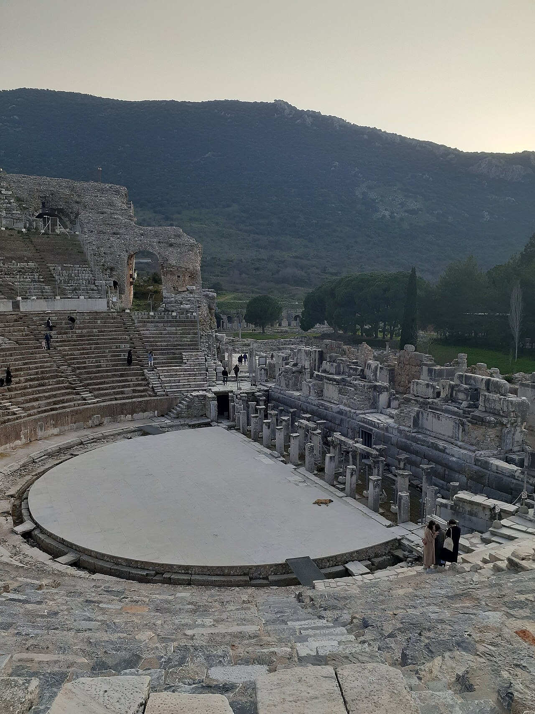
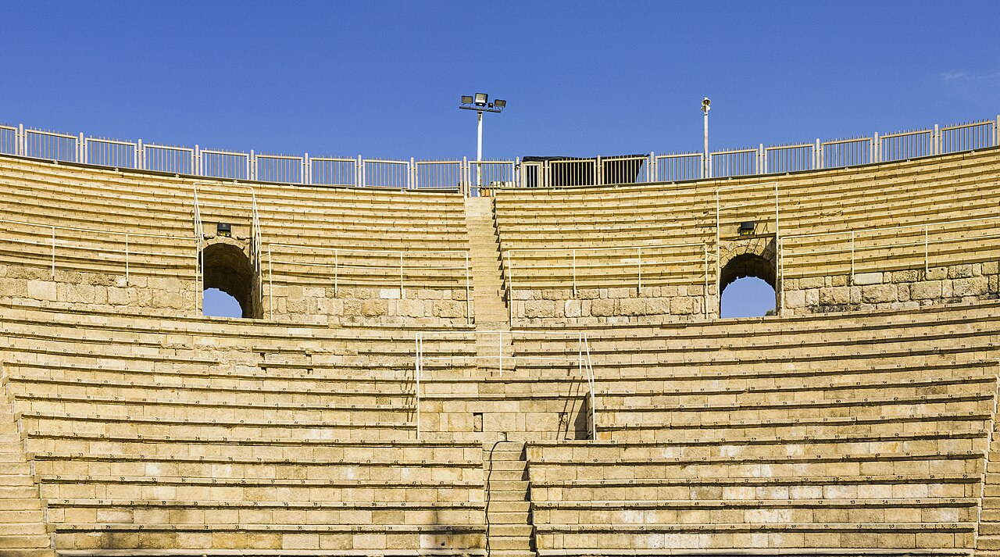
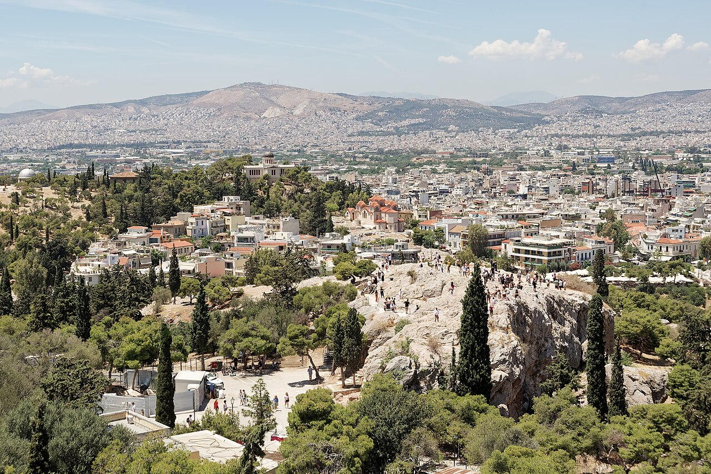
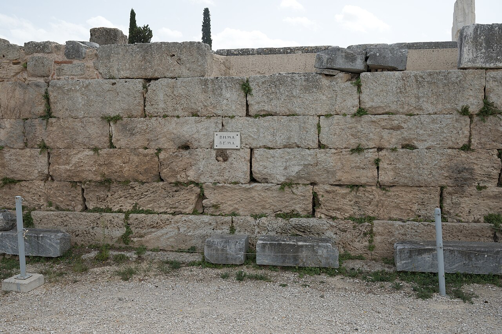
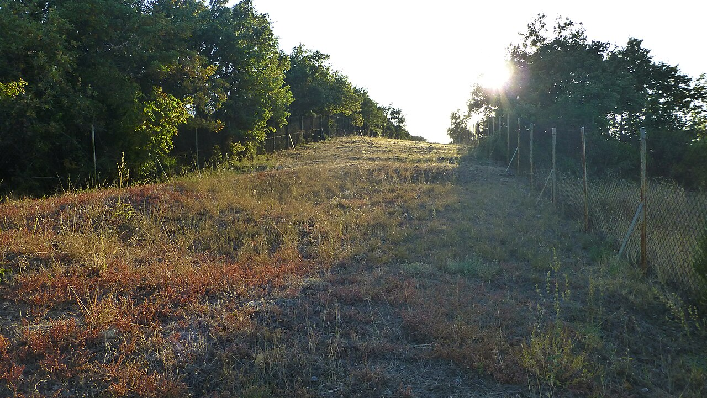
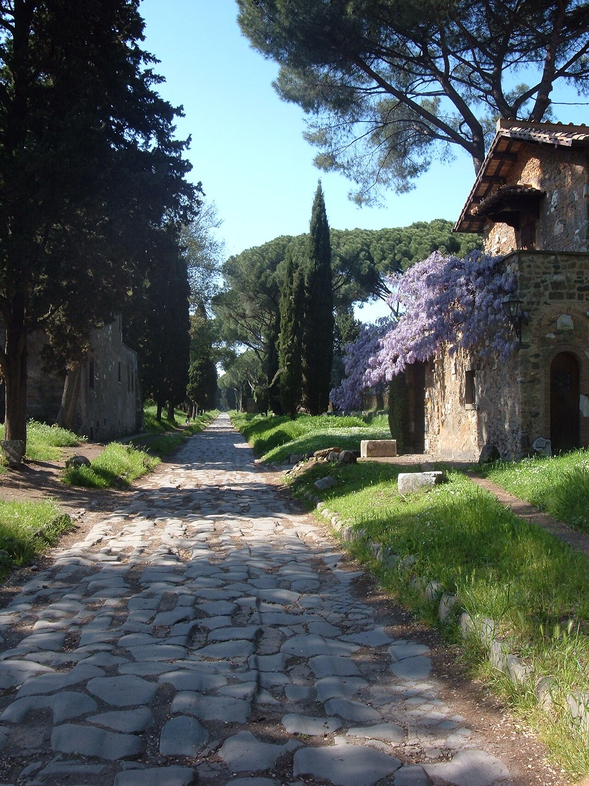

🏛 耶路撒冷
圣殿、公会、安东尼堡
第二圣殿的平台与阶梯、南方考古公园、第一世纪街道与逃城遗迹，帮助想象徒 2–7、21–23 的场景。公会在圣殿一带运作；千夫长驻军于安东尼堡传统位置，才能「跑下去」拦阻暴动（）。
犹太身份的核心是圣殿。指控司提反与保罗「糟蹋圣殿」，等于指控他们拆掉民族的根基。
使徒行传 · 教会历史 · 欧陆改革宗深读 · v3.1.0
罗马行省、道路与海路、城市考古札记、犹太离散、希腊罗马宗教：每幅图都有离线示意图与可切换的多源实景地图
使徒行传不是抽象寓言，而是发生在罗马帝国里的真实历史。行省、大道、海路、会堂、偶像与官员，构成福音前进的舞台。地理不是装饰：明白这些背景，才能读懂为什么保罗先走会堂、为什么能上诉凯撒、为什么以弗所会暴动、为什么船要在米利大过冬。本节把地图、历史与文化收在一处——先看概念图（离线），再看可切换多源的实景图。
滚动到此处后加载。网络不稳时自动切换底图；若全部失败，示意图与标记仍可阅读。
路加用「直到地极」（）作全书大纲，又用罗马作叙事终点。对第一世纪的读者，罗马就是已知世界的中心与尽头：福音在此「放胆传讲……并没有人禁止」（），不是帝国归信，而是基督的道已经进入帝国心脏。
早期扩展（青绿色）发生在犹太、撒马利亚、沿海与叙利亚；三次宣教旅行（金、蓝、绿）把福音送进小亚细亚与欧洲；紫色／玫红线是被押往罗马的海路。路线为示意，不代替古道实测。点按城市可读该地在书中的事件；可用播放按钮看路线推进。
滚动到此处后加载。网络不稳时自动切换底图；若全部失败，示意图与标记仍可阅读。
福音第一次越界，不是保罗的旅行，而是逼迫逼出来的分散（）。腓利到撒马利亚（与犹太人有七百年的裂痕），又在往迦萨的路上遇见埃提阿伯太监；彼得在约帕看见「不要当作俗物」的异象，走进凯撒利亚外邦人哥尼流的家。
安提阿（叙利亚省会，帝国第三大城）成为第一个以希腊人为主的教会，门徒称为「基督徒」是从这里起首（）。宣教的基地从耶路撒冷转到安提阿，是全书结构的转折。
滚动到此处后加载。网络不稳时自动切换底图；若全部失败，示意图与标记仍可阅读。
第一次（约 46–48）：从安提阿出发，经西流基渡海到塞浦路斯（撒拉米、帕弗），再抵旁非利亚的别加、彼西底的安提阿、以哥念、路司得、特庇。方伯士求保罗信主，是路加第一次记下罗马官员归信。
南加拉太城镇多沿罗马修建的塞巴斯特大道。路司得人呼巴拿巴为丢斯、保罗为希耳米，说明本地宙斯—赫尔墨斯崇拜仍活着（附近即有宙斯庙遗迹传统）。
滚动到此处后加载。网络不稳时自动切换底图；若全部失败，示意图与标记仍可阅读。
第二次（约 49–52）：耶路撒冷会议之后，保罗经陆路回访加拉太，在特罗亚见马其顿的异象，福音首次进入欧洲。腓立比（罗马殖民地，无会堂）、帖撒罗尼迦（厄纳齐亚大道上的自由城）、庇哩亚、雅典、哥林多。
哥林多住一年半，碰上亚该亚方伯迦流（德尔斐铭文将其任职定在约 51–52 年，是全书最硬的外证年锚）。
滚动到此处后加载。网络不稳时自动切换底图；若全部失败，示意图与标记仍可阅读。
第三次（约 52–57）：以以弗所为中心，约两年零三个月。推喇奴的学房、邪术书卷被焚、银匠底米丢煽动暴动——福音碰到了亚底米神庙支撑的城市经济。
回程走海路，在米利都请以弗所长老来，留下「圣灵立你们作全群的监督……牧养神的教会」（）这段改革宗教会论的关键经文。
滚动到此处后加载。网络不稳时自动切换底图；若全部失败，示意图与标记仍可阅读。
被押往罗马（约 59–60）：凯撒利亚换上亚历山大的粮船，经每拉、革哩底佳澳，遇「友拉革罗」大风，在米利大搁浅。二百七十六人「全都得了救」（）。
部丢利上岸后，弟兄出到亚比乌市和三馆迎接——这两处就在亚比亚大道上。路加写海程的气象、水手术语与港口顺序，被航海史与地理一再印证。
滚动到此处后加载。网络不稳时自动切换底图；若全部失败，示意图与标记仍可阅读。
犹太行省：罗马巡抚驻凯撒利亚而非耶路撒冷，因此保罗受审、坐监两年都在沿海首府（徒23–26）。耶路撒冷仍由大祭司与公会管理圣殿事务，形成「双重权力」。
叙利亚：安提阿是省会与交通枢纽，也是外邦宣教的母会。加拉太（本书主要涉及南加拉太诸城）、亚细亚（以弗所）、马其顿、亚该亚、塞浦路斯、意大利，构成保罗行动的行政区划。公民权让他在腓立比和耶路撒冷能主张罗马法的保护，并在非斯都面前上诉凯撒（）。
| 行省／地区 | 治理 | 书中主要城市 | 阅读要点 |
|---|---|---|---|
| 犹太 | 巡抚（驻凯撒利亚） | 耶路撒冷、凯撒利亚、约帕、吕大 | 圣殿与公会；腓力斯、非斯都；亚基帕二世 |
| 叙利亚 | 总督／省会安提阿 | 安提阿、大马士革、推罗、西顿 | 第三大城；「基督徒」之名的起源地 |
| 塞浦路斯 | 方伯（驻帕弗） | 撒拉米、帕弗 | 士求保罗信主（徒13） |
| 加拉太 | 罗马殖民地与本地城邦并存 | 彼西底安提阿、以哥念、路司得、特庇 | 塞巴斯特大道；提摩太的家乡 |
| 亚细亚 | 省会以弗所 | 以弗所、特罗亚、米利都 | 亚底米崇拜；亚细亚的首领 |
| 马其顿 | 腓立比为罗马殖民地 | 腓立比、帖撒罗尼迦、庇哩亚 | 厄纳齐亚大道；地方官（politarch） |
| 亚该亚 | 方伯驻哥林多 | 雅典、哥林多、坚革哩 | 迦流铭文（约 51–52）是年代锚点 |
| 意大利 | 首都罗马 | 部丢利、亚比乌市、三馆、罗马 | 粮船航线终点；软禁中的宣教 |
滚动到此处后加载。网络不稳时自动切换底图；若全部失败，示意图与标记仍可阅读。
陆路：南加拉太的塞巴斯特大道把彼西底安提阿、以哥念、路司得串起来；马其顿的厄纳齐亚大道（Via Egnatia）则经过尼亚波利、腓立比、暗妃波里、帖撒罗尼迦。保罗在欧洲的路线几乎是沿着这道帝国主干在走。
海路：冬日地中海（约 11 月至 3 月）被视为不宜航行，这是徒 27 章「已经过了禁食的节期」仍要冒险的背景。亚历山大粮船向罗马运埃及的粮，每拉是重要的换船港；徒 27–28 的港口顺序（每拉、革尼土、佳澳、米利大、叙拉古、利基翁、部丢利）符合粮船习惯航线。
亚比亚大道：弟兄出到亚比乌市和三馆迎接保罗（），这两站是罗马南郊大道上的知名驿站。福音进入首都，走的是帝国自己的路。
滚动到此处后加载。网络不稳时自动切换底图；若全部失败，示意图与标记仍可阅读。
下列城市各有考古或文献上的锚点。它们不是把信仰变成「文物展」，而是证明路加所写的是可核对的世界：官衔、剧场、座（bema）、大道与港口都在原地。
圣殿、公会、安东尼堡
第二圣殿的平台与阶梯、南方考古公园、第一世纪街道与逃城遗迹，帮助想象徒 2–7、21–23 的场景。公会在圣殿一带运作；千夫长驻军于安东尼堡传统位置，才能「跑下去」拦阻暴动（）。
犹太身份的核心是圣殿。指控司提反与保罗「糟蹋圣殿」，等于指控他们拆掉民族的根基。
巡抚官邸、希律海港
大希律建的人工港与剧场；1961 年出土的「彼拉多石」证实巡抚在此设立总部。保罗在此被囚两年，向腓力斯、非斯都、亚基帕陈述。
这里是罗马行政的犹太，不是圣殿的犹太。福音在总督府里被审问，却不被定罪。
多民族大都会
奥龙特斯河畔，帝国第三大城，估计有数十万居民、庞大的犹太社区与「敬畏神的人」。哥伦布式的十字街与岛区是古代作家笔下的名城。
教会在此第一次稳定地面向希腊人，也从这里差派宣教士。世界性的城，配上世界性的福音。
罗马殖民地、厄纳齐亚大道
城门通往河边的传统「祷告地方」；大道、剧场、监狱遗址与拉丁铭文，显示这里的法律与气质是罗马的，不是希腊城邦的。所以没有会堂，保罗才到河边去（）。
吕底亚一家、禁卒一家，都以「家」为单位受洗——圣约的家庭结构在外邦土地上显现。
亚略巴古、偶像之城
亚略巴古（战神山）仍在卫城脚下。 Pausanias 等古代作家记载雅典有「未识之神」一类的坛，与徒 17 的场景相合。斯多亚与伊壁鸠鲁是当时的主流学堂。
保罗不引用摩西，而从创造与复活讲起：同一位神，对不同的听众，用不同的起点，不改福音的终点。
迦流座、以拉都铭文
市中心的「座」（bema）传统上即迦流审判之处；一处路面铭文提到市政官以拉都（参罗 16:23）。会堂门楣残片也已发现。哥林多控制地峡两条海路，商贸与庙妓文化齐名。
在最放纵的港口住一年半，证明福音不是找「好土壤」才撒种，而是把教会建立在城市的中心。
剧场、亚底米庙、亚细亚首领
剧场可容约两万五千人，正是徒 19 暴动的舞台；亚底米神庙为古代七大奇迹之一；铭文证实「亚细亚的首领」职衔。库瑞特斯大道与港口街勾勒出保罗每日走过的城市尺度。
当「这道」威胁银匠生意，宗教、经济与市政就绑在一起反对福音。冲突不是偶然，是偶像体系的自我保护。
亚比亚大道、软禁宣教
亚比乌市与三馆为大道驿站；罗马犹太社区集中在河西等地。使徒行传停在软禁两年：「放胆传讲神国的道，将主耶稣基督的事教导人，并没有人禁止。」（）
终点不是凯撒归信，而是道已到达地极。余下的故事（传统中的殉道）交给教会记忆，路加把灯留在点燃的地方。
滚动到此处后加载。网络不稳时自动切换底图；若全部失败，示意图与标记仍可阅读。
五旬节名单从帕提亚、玛代、以拦、美索不达米亚，经犹太、加帕多家、本都、亚细亚、弗吕家、旁非利亚，到埃及、古利奈、罗马、克里特与阿拉伯——这是一幅离散犹太人的世界地图。他们来过节，听见自己的乡谈，把听见的带回会堂所在的城市。
保罗的策略几乎是固定的：「先是犹太人，后是希腊人」——每到一城先进会堂，对「犹太人」和「敬畏神的人」（外邦慕道者，已熟悉律法与先知）讲论基督如何应验圣经。会堂是恩典之约的旧群体，福音在此宣告应许的「是」已经在耶稣里成了。
革老丢年间犹太人被逐出罗马（徒 18:2，与苏维托尼乌斯的记载相印证），把亚居拉、百基拉带到哥林多，成为保罗的同工。离散有时是审判，有时是差遣。
滚动到此处后加载。网络不稳时自动切换底图；若全部失败，示意图与标记仍可阅读。
第一世纪的「宗教」不是私人爱好，而是城邦、行会与帝国的公共生活。以弗所的亚底米、路司得的丢斯与希耳米、腓立比的占卜业、哥林多的偶像肉市、雅典的诸多神坛，加上遍布全帝国的帝王崇拜（凯撒被称为「主」「神之子」），构成使徒所面对的空气。
因此「另有一个王耶稣」（）会被听成政治口号；「人所制造的不是神」（）会触发暴动。福音不是补充一个神祇，而是宣告独一的创造主与复活的审判主。
与此并行的是邪术：行邪术的西门、以吕马、巫鬼的使女、士基瓦七子、以弗所的邪书。路加反复写同一件事——耶稣的名胜过一切黑暗权势，不是靠更强的法术，而是靠被钉与复活的那一位。
| 类型 | 地点 | 在使徒行传中的意义 |
|---|---|---|
| 犹太圣殿与公会 | 耶路撒冷 | 律法、祭祀、洁净与民族身份；撒都该人与法利赛人的分歧 |
| 会堂与离散 | 各城 | 读经、讲论、劝勉；外邦「敬畏神的人」常是福音的桥梁 |
| 帝王崇拜 | 全帝国，尤其罗马与殖民地 | 凯撒为「主」；承认耶稣为主，必与之冲突 |
| 城邦神明与行会 | 以弗所亚底米、路司得丢斯 | 神庙经济与手艺行会绑在一起（银匠、占卜） |
| 哲学学堂 | 雅典（亦影响哥林多） | 斯多亚（理性、命运）与伊壁鸠鲁（快乐、神不干预）；复活被讥为「传说」 |
| 邪术与鬼魔 | 撒马利亚、帕弗、腓立比、以弗所 | 耶稣的名驱鬼、胜过书卷与法术 |
四条专线把徒 8–11 的越界写清楚：每一幅都是离线情景图＋多源实景图。播放按钮可按故事顺序画出路线。
滚动到此处后加载。网络不稳时自动切换底图；若全部失败，示意图与标记仍可阅读。
撒马利亚人与犹太人有七百年裂痕（只认摩西五经、敬拜在基利心山）。腓利过了这道墙，彼得、约翰随后按手。
「从耶路撒冷下迦萨的路」是南下沿海驿道；太监是埃提阿伯女王干大基的总管，读的是七十士译本以赛亚书。
腓利后来定居凯撒利亚（徒21:8），家中有四个说预言的女儿——福音在行政首府扎根。
滚动到此处后加载。网络不稳时自动切换底图；若全部失败，示意图与标记仍可阅读。
大马士革是十城联盟中的大城，有会堂网络；「直街」至今仍可对照古城轴线。
加拉太书 1:17 说他曾往阿拉伯（纳巴泰一带）再回大马士革——路加从略，保罗强调福音不是人传授的。
巴拿巴带他见使徒后，因性命危险被送到大数；数年后再被巴拿巴接到安提阿（徒11:25）。
滚动到此处后加载。网络不稳时自动切换底图；若全部失败，示意图与标记仍可阅读。
吕大（罗 Lod）、约帕（雅法）是沿海平原的犹太市镇；约帕是约拿上船逃往他施之地——如今彼得从这里走向外邦。
凯撒利亚是罗马巡抚驻地、深水港与驻军城，由希律所建，向凯撒致敬。哥尼流是意大利营的百夫长。
异象中的布与不洁之物，不是在讨论食谱，而是拆掉「圣俗隔离」的墙，为外邦人入约开门。
滚动到此处后加载。网络不稳时自动切换底图；若全部失败，示意图与标记仍可阅读。
逼迫使门徒散开，福音却沿腓尼基海岸（推罗、西顿）、海路到塞浦路斯，并北上帝国第三大城安提阿。
只对犹太人讲论的人，与「塞浦路斯和古利奈人向希腊人传主耶稣」的人，在安提阿分成两条线——后者成为外邦宣教的起点。
「基督徒」这名首先在安提阿出现（徒11:26）。巴拿巴从耶路撒冷来，又去大数找扫罗，两人在此教导一年。
滚动到此处后加载。网络不稳时自动切换底图；若全部失败，示意图与标记仍可阅读。
圣殿由外邦人院、妇女院、以色列院、祭司院层层向内。残疾者不能进内院事奉，所以生来瘸腿的人被放在「美门」乞讨（徒3:2）。
所罗门廊在圣殿东侧，是公众讲论之处（约10:23；徒3:11；5:12）。使徒没有离开圣殿敬拜，直到司提反的讲章把「圣殿」重新指向基督。
安东尼堡在圣殿北侧，由希律所建、驻罗马军。暴动时千夫长「带着兵丁跑下去」，又把保罗「带上营楼台阶」——平面图与叙事咬合。
滚动到此处后加载。网络不稳时自动切换底图；若全部失败，示意图与标记仍可阅读。
保罗在以弗所推喇奴学房辩论两年，「叫一切住在亚细亚的……都听见这道」（徒19:10）。启示录的七教会正在这同一行省的环形驿道上。
以弗所是省会与亚底米大庙所在；士每拿、别迦摩、推雅推喇、撒狄、非拉铁非、老底嘉沿官道顺时针分布，老底嘉邻近歌罗西。
亚底米神庙与银匠行会构成城市经济；「这道」一兴旺，偶像生意就受冲击（徒19:23-27）。启示录对以弗所说「把起初的爱心离弃了」，是同一座教会稍后的诊断。
滚动到此处后加载。网络不稳时自动切换底图；若全部失败，示意图与标记仍可阅读。
厄纳齐亚大道横贯马其顿，西起亚得里亚海的都拉基乌，东到拜占庭，是罗马军政主干道。
保罗从特罗亚海路到尼亚波利，立刻走上这条大道：腓立比（罗马殖民地）→ 暗妃波里 → 帖撒罗尼迦（省会、有会堂）。
庇哩亚不在主干道正线上，弟兄夜间送保罗走这条「偏路」，避开帖撒罗尼迦的追逼——地理本身在讲述护理。
滚动到此处后加载。网络不稳时自动切换底图；若全部失败，示意图与标记仍可阅读。
秋季地中海「禁航期」将至（徒27:9 的禁食节多指赎罪日）。佳澳（Fair Havens）避风不佳，船上多数人想去西边的非尼基过冬。
「优罗革罗」是东北暴风。他们在高大岛（Cauda）南面放下小船、用缆绳捆船，又怕被吹到北非赛耳底沙滩。
连续十四昼夜不见日月；第十四夜水手测深，从二十丈到十五丈。船在两水夹流处搁浅，276 人全部上岸。米利大（马耳他）土人「有情分」，部百流是「岛长」。
滚动到此处后加载。网络不稳时自动切换底图；若全部失败，示意图与标记仍可阅读。
部丢利（Puteoli）是意大利的深水港，亚历山大粮船常在此卸货。保罗遇着弟兄，住了七天。
亚比乌市（Forum Appii）与三馆（Tres Tabernae）是亚比亚大道（Via Appia）上的驿站。罗马的弟兄远道来迎，保罗「感谢神，放心壮胆」。
他以囚犯身份进首都，却能「自己租的房子」接待来访，放胆传神国的道——地极不是地图的终点，是见证的新起点。
短片与照片来自维基共享资源（CC BY / CC BY-SA），已在本站留下副本；即使外部网络被拦，图片与视频仍可在本页播放。示意图与文字不依赖这些文件。





